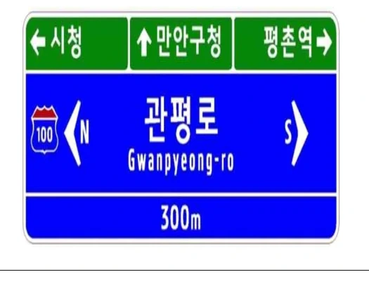

965. Mô tả nào dưới đây đúng với biển báo tên đường ngã 3 này?

- ①Rẽ trái thì sẽ thấy Tòa thị chính ở phía trước 300m.
- ②‘Gwanpyeong-ro’ là đoạn đường có hướng từ Tây sang Đông.
- ③Rẽ phải thì sẽ thấy ga Pyungchon ở phía trước 300m.
- ④Nếu đi thẳng thì sẽ gặp đường "Gwanpyeong-ro" ở phía trước 300m.
Xem đáp án
Đáp án
④ Nếu đi thẳng thì sẽ gặp đường "Gwanpyeong-ro" ở phía trước 300m.
Căn cứ
Tiêu chuẩn chi tiết về việc thiết lập và thay đổi các đoạn đường, v.v. [Quy định số 162 của Bộ Nội vụ và An toàn ban hành ngày 9 tháng 6 năm 2021] Điều 5 1. Điểm đầu là điểm hoặc lối vào nối với một đoạn đường khác, nhưng nếu điểm đầu và điểm cuối có cùng điều kiện thì được đặt theo các hướng từ Tây sang Đông và từ Nam lên Bắc.
Phần căn cứ là bản dịch máy để tham khảo.